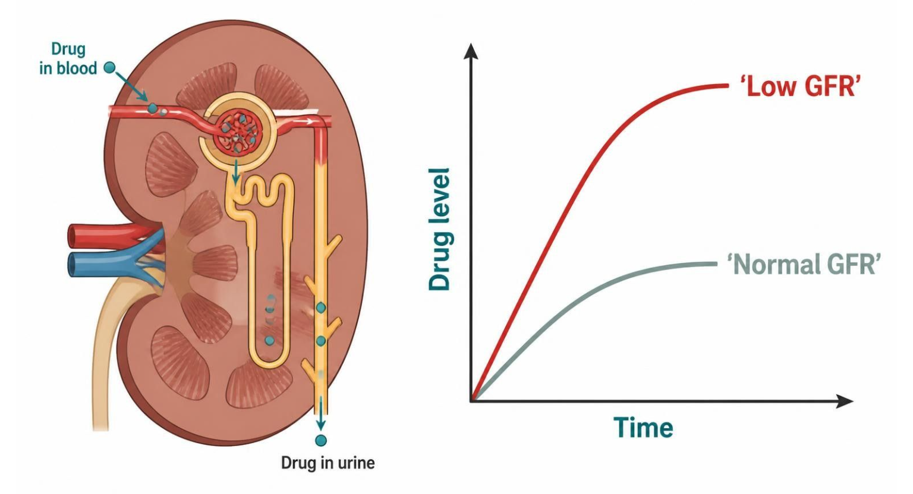
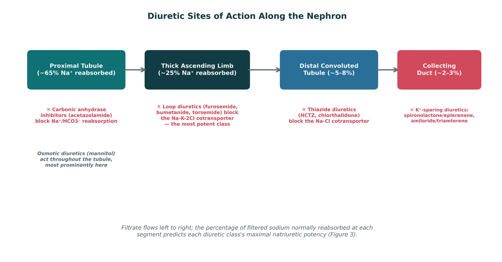
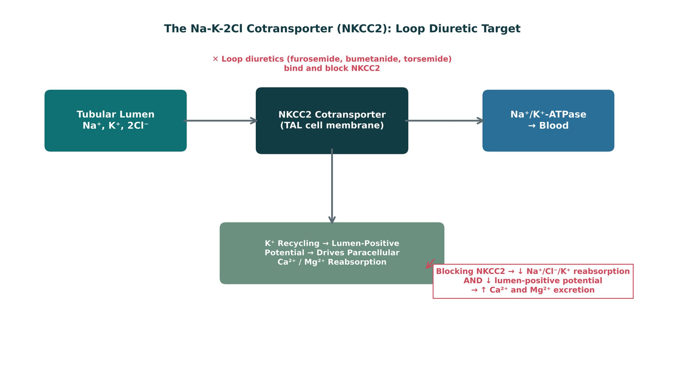
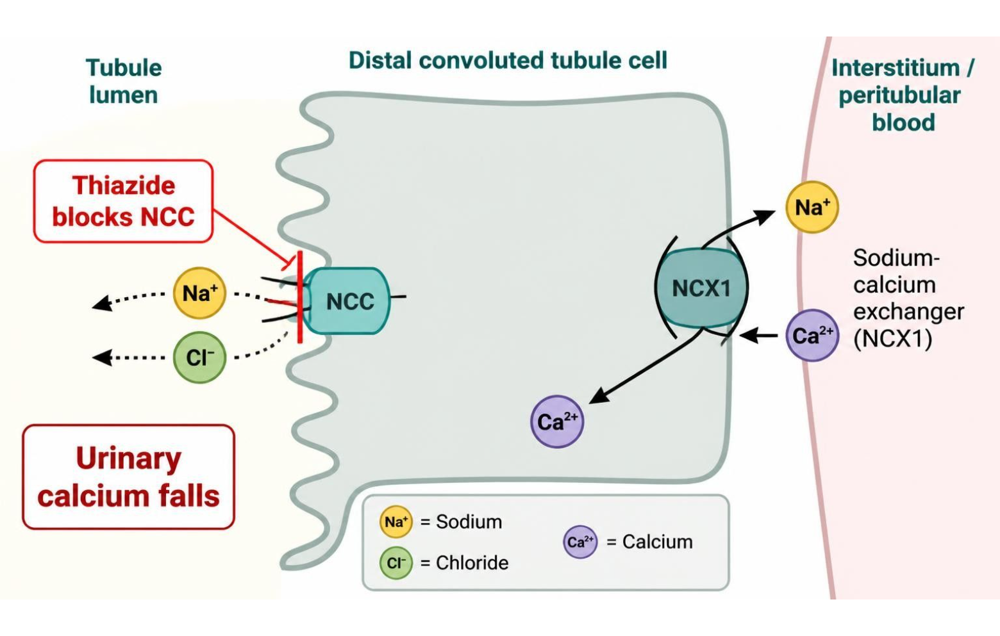
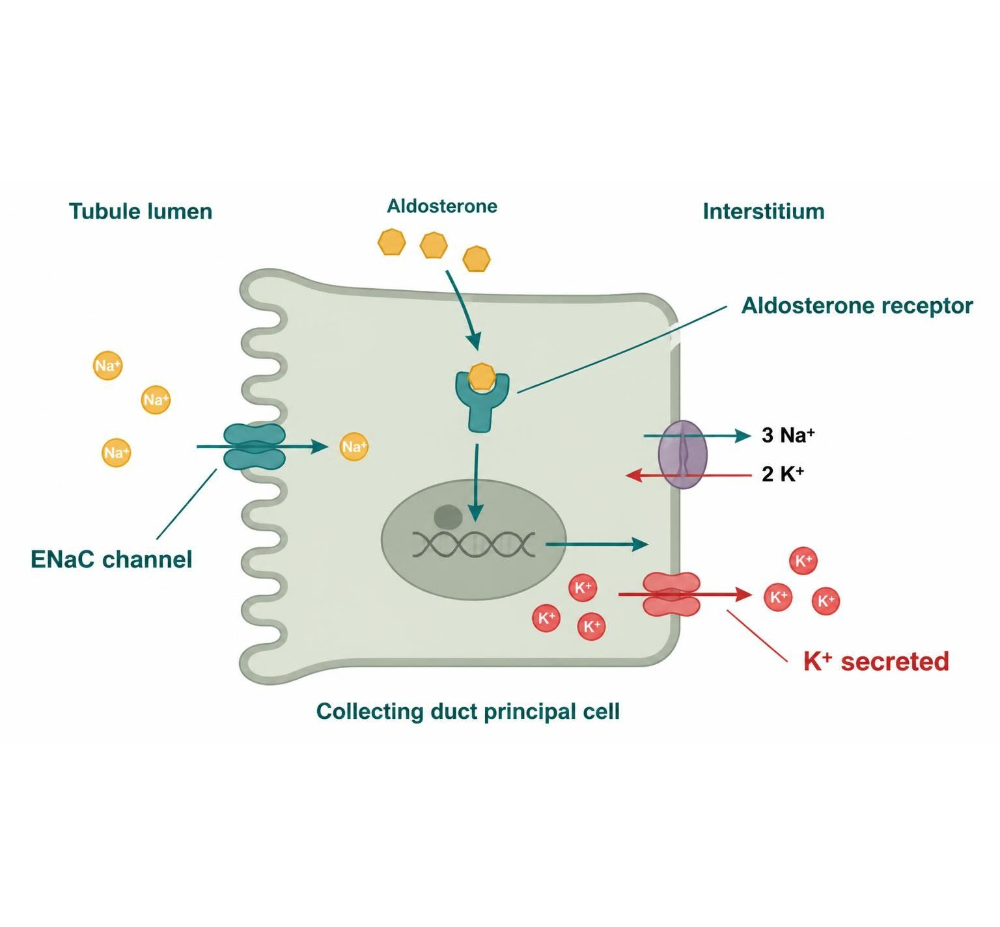
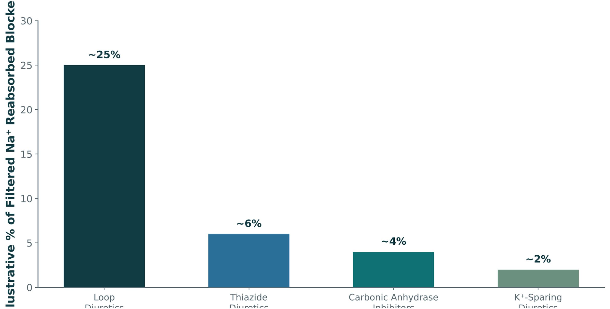

Unit 5 · Session 1 · Tue, Nov 17, 2026
3 parts · every fact cited to its slide or textbook page. About 120 minutes of focused study.
IO = syllabus unit objective · SO = this session's objectives slide.
| ID | Objective | Covered in |
|---|---|---|
| IO5.1 | Identify major pharmacologic classes used in the management of renal conditions and describe their mechanisms of action. | Part 1 · Renal Dosing & Diuretic Sites Part 2 · Loop & Thiazide Diuretics Part 3 · Potassium-Sparing, CAI & Osmotic Diuretics |
| IO5.2 | Describe the indications, contraindications, adverse effects, and clinically significant interactions associated with medications used to treat renal conditions. | Part 2 · Loop & Thiazide Diuretics Part 3 · Potassium-Sparing, CAI & Osmotic Diuretics |
| IO5.3 | Compare pharmacologic agents within and across therapeutic classes to distinguish clinically relevant differences in efficacy, safety, and use. | Part 2 · Loop & Thiazide Diuretics Part 3 · Potassium-Sparing, CAI & Osmotic Diuretics |
| IO5.4 | Select appropriate pharmacologic therapy for common renal conditions based on clinical presentation and patient-specific factors. | Part 2 · Loop & Thiazide Diuretics Part 3 · Potassium-Sparing, CAI & Osmotic Diuretics |
| IO5.5 | Identify appropriate dosing, administration, and monitoring considerations for medications used in renal conditions. | Part 1 · Renal Dosing & Diuretic Sites |
| IO5.6 | Explain important medication-use and safety information to patients receiving pharmacotherapy for renal. | Part 3 · Potassium-Sparing, CAI & Osmotic Diuretics |
| SO1 | Identify the major pharmacologic classes used in the management of renal conditions — diuretics — and describe their mechanisms of action at specific nephron sites. | Part 1 · Renal Dosing & Diuretic Sites Part 2 · Loop & Thiazide Diuretics Part 3 · Potassium-Sparing, CAI & Osmotic Diuretics |
| SO2 | Apply basic pharmacokinetic principles to drug dosing in renal impairment, including creatinine clearance/GFR-based dose and interval adjustment. | Part 1 · Renal Dosing & Diuretic Sites |
| SO3 | Describe the indications, contraindications, adverse effects, and clinically significant interactions of loop, thiazide, potassium-sparing, carbonic anhydrase inhibitor, and osmotic diuretics. | Part 2 · Loop & Thiazide Diuretics Part 3 · Potassium-Sparing, CAI & Osmotic Diuretics |
| SO4 | Compare diuretic classes to distinguish clinically relevant differences in efficacy, electrolyte effects, and clinical use. | Part 2 · Loop & Thiazide Diuretics Part 3 · Potassium-Sparing, CAI & Osmotic Diuretics |
| SO5 | Identify dosing, administration, and monitoring considerations, and explain key medication-safety counseling points for patients on diuretic therapy. | Part 2 · Loop & Thiazide Diuretics Part 3 · Potassium-Sparing, CAI & Osmotic Diuretics |
Not covered in materials


| What changes | Practical consideration |
|---|---|
| Dose, interval, or both — depends on the drug | Estimate CrCl or eGFR before dosing, especially in older adults |
| Loading dose often unchanged; maintenance dose adjusted | Reassess when illness, dehydration or nephrotoxins drop GFR |
| Renally cleared active/toxic metabolites count too | Use dosing references or clinical pharmacy |
How to tell them apart. Sources: S8


| Loop diuretics | Thiazide diuretics | |
|---|---|---|
| Site, potency | Thick ascending limb — most potent natriuresis (~25%) | Distal convoluted tubule — modest natriuresis (~5–8%) |
| Calcium | Increase Ca²⁺ excretion | Decrease Ca²⁺ excretion |
| Best use | Preferred in edematous states and advanced CKD | First-line for essential hypertension with preserved renal function |
| Watch for | Greater risk of ototoxicity, more pronounced electrolyte shifts | Lose efficacy as GFR falls below ~30 mL/min |
How to tell them apart. Sources: S14; SG U5-R4
| Drug | Class | Formulation | Adult dose | Indications |
|---|---|---|---|---|
| Furosemide (Lasix) | Loop diuretic | Tablets 20/40/80 mg; oral solution; IV injection 10 mg/mL | Edema: 20-80 mg PO once or BID, titrate to response (up to 600 mg/day in severe CKD or HF); IV 20-40 mg slowly (no faster than 4 mg/min) | Edema (heart failure, cirrhosis, kidney disease), hypertension, acute pulmonary edema, hypercalcemia |
| Bumetanide (Bumex) | Loop diuretic | Tablets 0.5/1/2 mg; IV injection 0.25 mg/mL | Edema: 0.5-2 mg PO once or BID (maximum 10 mg/day); IV 0.5-1 mg | Edema in heart failure, hepatic and renal disease |
| Torsemide (Demadex) | Loop diuretic | Tablets 5/10/20/100 mg | Edema: 10-20 mg PO daily (up to 200 mg/day); hypertension: 5 mg daily | Edema in heart failure, kidney disease, cirrhosis; hypertension |
How to tell them apart. Sources: S27; S28; S29
| Drug | Adverse effects | Contraindications | Toxicity / overdose |
|---|---|---|---|
| Furosemide (Lasix) | Hypokalemia, hypomagnesemia, metabolic alkalosis, volume depletion, hyperuricemia, ototoxicity | Anuria, hypersensitivity; use caution with sulfonamide allergy (low cross-reactivity), hepatic coma | Ototoxicity with rapid IV or high doses, severe volume and electrolyte depletion, AKI; monitor potassium, magnesium, creatinine |
| Bumetanide (Bumex) | Hypokalemia, hyponatremia, hypomagnesemia, muscle cramps, dizziness, ototoxicity | Anuria, hepatic coma, severe electrolyte depletion, hypersensitivity | About 40 times more potent than furosemide mg for mg; profound diuresis, hypokalemia, ototoxicity |
| Torsemide (Demadex) | Hypokalemia, dizziness, headache, hyperuricemia, ototoxicity (less than furosemide) | Anuria, hypersensitivity (sulfonylurea or sulfonamide allergy caution) | Volume depletion, hypokalemia, hypotension; longer half-life and more predictable absorption than furosemide |
How to tell them apart. Sources: S27; S28; S29
| Drug | Class | Formulation | Adult dose | Indications |
|---|---|---|---|---|
| Hydrochlorothiazide (Microzide) | Thiazide diuretic | Tablets 12.5/25/50 mg; capsules 12.5 mg; many fixed combinations | Hypertension: 12.5-25 mg PO daily (maximum 50 mg); edema: 25-100 mg daily | First-line hypertension, mild edema, calcium kidney stones, nephrogenic diabetes insipidus |
| Chlorthalidone (Thalitone) | Thiazide-like diuretic | Tablets 12.5/25/50 mg | Hypertension: 12.5-25 mg PO daily (maximum 50 mg); edema: 50-100 mg daily | Hypertension (longer duration, often preferred), edema |
How to tell them apart. Sources: S30; S31
| Drug | Adverse effects | Contraindications | Toxicity / overdose |
|---|---|---|---|
| Hydrochlorothiazide (Microzide) | Hyponatremia, hypokalemia, hypercalcemia, hyperglycemia, hyperuricemia and gout, photosensitivity | Anuria, sulfonamide allergy; less effective when GFR is below about 30 mL/min | Severe hyponatremia and hypokalemia, volume depletion, hypercalcemia; monitor sodium, potassium, calcium, glucose |
| Chlorthalidone (Thalitone) | Hypokalemia, hyponatremia, hyperuricemia, hyperglycemia, erectile dysfunction | Anuria, sulfonamide allergy, severe hypokalemia | Profound hypokalemia and hyponatremia (more than hydrochlorothiazide at equal dose); long half-life of 40-60 hours |
How to tell them apart. Sources: S30; S31


| Class | Example agent(s) | Key teaching point |
|---|---|---|
| Loop | Furosemide, bumetanide, torsemide | Most potent; blocks NKCC2; ↑ Ca²⁺ excretion; ototoxicity risk |
| Thiazide | Hydrochlorothiazide, chlorthalidone | First-line for HTN; ↓ Ca²⁺ excretion; loses efficacy at low GFR |
| K⁺-sparing | Spironolactone, eplerenone, amiloride, triamterene | Hyperkalemia risk, especially with ACEi/ARB |
| CAI / Osmotic | Acetazolamide / mannitol | Niche uses: glaucoma, altitude sickness / ↑ ICP, ↑ IOP |
How to tell them apart. Sources: S22; S22 (notes)
| Acetazolamide | Mannitol | |
|---|---|---|
| How | Blocks carbonic anhydrase → less HCO₃⁻ reabsorbed | Filtered, not reabsorbed → water held in lumen |
| Result | Bicarbonate diuresis, metabolic acidosis | Osmotic diuresis |
| Uses | Glaucoma, altitude sickness, raised intracranial pressure | Raised ICP or IOP |
| Watch for | Metabolic acidosis, potassium loss, kidney stones | Expands extracellular volume; avoid in heart failure and volume depletion |
How to tell them apart. Sources: S20; S20 (notes)
| Stem | Class | Examples | Memory aid |
|---|---|---|---|
| -semide | Loop | Furosemide, torsemide | Works at the thick ascending limb; strongest class |
| -tanide | Loop | Bumetanide | About 40× furosemide potency, mg for mg |
| -thiazide | Thiazide | Hydrochlorothiazide | Acts at the distal convoluted tubule |
| -thalidone | Thiazide-like | Chlorthalidone | Same site, longer action |
| -onolactone / -erenone | Aldosterone antagonist | Spironolactone, eplerenone | Blocks the mineralocorticoid receptor |
| -ride | ENaC blocker | Amiloride | Blocks the sodium channel directly |
| -zolamide | Carbonic anhydrase inhibitor | Acetazolamide | Proximal tubule; bicarbonate diuresis |
| mannitol / -itol | Osmotic diuretic | Mannitol | Filtered, holds water in the lumen |
How to tell them apart. Sources: S24; S24 (notes)
| Drug(s) | Why it matters here |
|---|---|
| ACE inhibitors and ARBs | Hyperkalemia with potassium-sparing diuretics |
| NSAIDs | Blunt diuretic effect; raise AKI risk |
| Lithium | Levels rise with thiazides |
| Digoxin | Hypokalemia from loops increases toxicity |
| Aminoglycosides | Additive ototoxicity with loops |
| Potassium supplements and trimethoprim | Hyperkalemia with potassium-sparing diuretics |
| Sulfonamide allergy | Caution with loops, thiazides, acetazolamide |
| Metformin, vancomycin, DOACs | Renally cleared; need dose adjustment |
How to tell them apart. Sources: S38; S38 (notes)
| Drug | Class | Formulation | Adult dose | Indications |
|---|---|---|---|---|
| Spironolactone (Aldactone) | Aldosterone receptor antagonist (potassium-sparing) | Tablets 25/50/100 mg; oral suspension | Hypertension: 25-100 mg daily; heart failure: 12.5-25 mg daily; primary hyperaldosteronism: 100-400 mg daily | Heart failure, resistant hypertension, primary hyperaldosteronism, edema, ascites |
| Eplerenone (Inspra) | Selective aldosterone receptor antagonist | Tablets 25/50 mg | Heart failure post-MI: 25 mg daily, increase to 50 mg; hypertension: 50 mg daily, may increase to BID | Heart failure after myocardial infarction, hypertension |
| Amiloride (Midamor) | ENaC blocker (potassium-sparing) | Tablets 5 mg | 5 mg PO daily, may increase to 10 mg (maximum 20 mg/day) | Adjunct to loop or thiazide to preserve potassium, lithium-induced nephrogenic diabetes insipidus |
| Triamterene (Dyrenium; Maxzide and Dyazide combinations) | ENaC blocker (potassium-sparing) | Capsules 50/100 mg; combination tablets with hydrochlorothiazide (37.5/25 and 75/50 mg) | Alone: 100 mg PO BID (maximum 300 mg/day); combination: 37.5/25 to 75/50 mg daily | Edema, hypertension, hypokalemia prevention |
How to tell them apart. Sources: S32; S33; S34; S35
| Drug | Adverse effects | Contraindications | Toxicity / overdose |
|---|---|---|---|
| Spironolactone (Aldactone) | Hyperkalemia, gynecomastia, menstrual irregularity, breast tenderness, GI upset | Hyperkalemia, Addison disease, anuria; avoid with potassium supplements and caution with ACE inhibitors or ARBs | Life-threatening hyperkalemia, especially in CKD or with ACE inhibitor/ARB; monitor potassium and creatinine within 1 week |
| Eplerenone (Inspra) | Hyperkalemia, dizziness, hypertriglyceridemia, fewer antiandrogen effects | Potassium above 5.5 mEq/L, CrCl below 30 mL/min, strong CYP3A4 inhibitors (such as ketoconazole) | Hyperkalemia; levels rise sharply with CYP3A4 inhibitors; monitor potassium and creatinine |
| Amiloride (Midamor) | Hyperkalemia, nausea, headache, weakness | Potassium above 5.5 mEq/L, anuria, significant renal impairment, concomitant potassium supplements | Hyperkalemia with arrhythmias, especially in diabetes and CKD; monitor potassium |
| Triamterene (Dyrenium; Maxzide and Dyazide combinations) | Hyperkalemia, nausea, kidney stones, blue urine, folate antagonism | Hyperkalemia, severe renal impairment, anuria, concomitant potassium supplements | Hyperkalemia, nephrolithiasis, AKI with NSAIDs; monitor potassium and creatinine |
How to tell them apart. Sources: S32; S33; S34; S35
| Drug | Class | Formulation | Adult dose | Indications |
|---|---|---|---|---|
| Acetazolamide (Diamox) | Carbonic anhydrase inhibitor | Tablets 125/250 mg; extended-release capsules 500 mg; IV 500 mg | Glaucoma: 250 mg PO 1-4 times daily; altitude sickness: 125-250 mg BID starting a day before ascent; edema: 250-375 mg daily | Glaucoma, altitude sickness prophylaxis, metabolic alkalosis, idiopathic intracranial hypertension |
| Mannitol (Osmitrol) | Osmotic diuretic | IV solutions 10%, 15%, 20% and 25% | Raised ICP or IOP: 0.25-1 g/kg IV over 30-60 minutes; repeat 0.25-0.5 g/kg every 4-8 hours as needed | Raised intracranial pressure, raised intraocular pressure, oliguria prevention in selected cases |
How to tell them apart. Sources: S36; S37
| Drug | Adverse effects | Contraindications | Toxicity / overdose |
|---|---|---|---|
| Acetazolamide (Diamox) | Metabolic acidosis, paresthesias, hypokalemia, kidney stones, taste changes | Sulfonamide allergy, severe renal or hepatic disease, hyponatremia, hypokalemia, adrenal failure | Severe metabolic acidosis, hypokalemia, confusion, bone marrow suppression (rare) |
| Mannitol (Osmitrol) | Fluid and electrolyte shifts, headache, nausea, thirst, hyponatremia | Anuria, severe dehydration, active intracranial bleeding, severe pulmonary edema, heart failure | Volume overload with pulmonary edema, hyperosmolality, AKI, hypo- or hypernatremia; monitor osmolality and electrolytes |
How to tell them apart. Sources: S36; S37
| Drug / group | Mechanism | Point |
|---|---|---|
| SGLT2 inhibitors (dapagliflozin, empagliflozin, canagliflozin) | Block proximal Na⁺/glucose cotransport | Cardio- and renoprotective; genital fungal infections |
| Finerenone | Nonsteroidal mineralocorticoid antagonist | Less hyperkalemia (2.8%); slows diabetic CKD |
| Metolazone | Thiazide-like | Added to loops for synergy; start 2.5 mg weekly |
| Ethacrynic acid | Loop, not a sulfonamide | Option for true sulfa allergy |
| Tolvaptan / conivaptan | V2 / V1a+V2 ADH antagonists | SIADH, heart-failure hyponatremia; liver tests |
| Dorzolamide, brinzolamide | Topical carbonic anhydrase inhibitors | Glaucoma without systemic effects |
How to tell them apart. Sources: p. 267; p. 268; p. 273; p. 276; p. 277; p. 281
Every term, mechanism, drug, and number. Hide the answers and quiz yourself; tap a blurred answer to peek.
| Prompt | Answer |
|---|---|
| Falling GFR | Accumulation → reduce dose, extend interval, or bothS5; S6; SG U5-R1 |
| Loading vs. maintenance | Loading often unchanged; maintenance adjustedS8 |
| Na⁺ reabsorbed by segment | PT ~65% · TAL ~25% · DCT 5–8% · CD 2–3%S7 (notes) |
| Loop target | NKCC2, thick ascending limbS10 |
| Loop AEs | ↓K, ↓Mg, alkalosis, ototoxicity, hyperuricemiaS10 |
| Thiazide target | NCC, distal convoluted tubuleS12 |
| Thiazide AEs | ↓Na (older adults), ↓K, ↑glucose, ↑uric acid, ↑CaS12 |
| Calcium | Loops ↑ excretion · thiazides ↓ excretionS14; SG U5-R3 |
| Thiazide cutoff | GFR < ~30 → switch to a loopS15; SG U5-R4 |
| Chlorthalidone | Longer half-life (40–60 h), 24-hour BP controlS12; S31 |
| Bumetanide | About 40× furosemide mg for mgS28 |
| K⁺-sparing subgroups | Spironolactone, eplerenone (receptor) · amiloride, triamterene (ENaC)S17; SG U5-R5 |
| Spironolactone vs. eplerenone | Gynecomastia vs. fewer antiandrogen effects; eplerenone + CYP3A4 inhibitorsS17; S33 |
| Hyperkalemia setup | K⁺-sparing + ACEi/ARB + CKDS17; S23 |
| Acetazolamide | Glaucoma, altitude sickness, alkalosis; causes acidosisS19; SG U5-R6 |
| Mannitol | Raised ICP/IOP; avoid in heart failureS19; S20 |
| Digoxin + loop | Hypokalemia → digoxin toxicityS38 |
| Lithium + thiazide | Lithium levels riseS38 |
| Maintenance vs. loading dose | Maintenance = CL × target · loading = V × targetp. 51; p. 52 |
| Steady state | About four half-livesp. 47 |
| Hypercalcemia regimen | Normal saline + IV furosemide 80–120 mgp. 280 |
| Loop resistance | Add metolazone (loop + thiazide synergy); watch K⁺p. 277 |
| Cirrhotic ascites | Spironolactone (loops resisted)p. 279 |
| Eplerenone + CYP3A4 inhibitors | Levels rise; spironolactone unaffectedp. 275 |
| SIADH, water restriction failed | Tolvaptan (oral V2) or conivaptan (IV)p. 276 |
| SGLT2 inhibitors | Cardiorenal protection; genital fungal infectionsp. 268; p. 269 |
First, the lecture's own 0 knowledge checks — exactly as written. Then original PANCE-style questions. Tap an answer to reveal the explanation.
Tick only what you could teach out loud. Saved on this device.